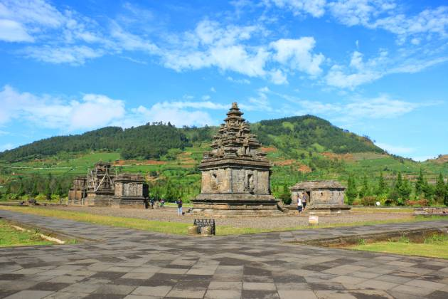

Paket Wisata Dieng
One Day Tour Dieng
Harga mulai dari Rp275.000/pax
Cocok buat kamu yang hanya punya waktu sehari, tapi ingin merasakan atmosfer khas pegunungan Dieng.
Mulai pagi dari Wonosobo, keliling ke spot ikonik seperti Telaga Warna dan Kawah Sikidang, lalu kembali di sore hari.
Efisien tanpa kehilangan esensi perjalanan.
Selengkapnya »
Paket 2 Hari 1 Malam
Harga mulai dari Rp975.000/pax
Pilihan populer bagi traveler yang ingin lebih dari sekadar mampir.
Hari pertama menjelajahi alam dan situs budaya, malamnya menikmati suasana dingin Dieng.
Hari kedua, biasanya ditutup dengan sunrise di Sikunir. Pas untuk yang ingin liburan padat tapi tenang.
Selengkapnya »
Paket 3 Hari 2 Malam
Harga mulai dari Rp1.700.000/pax
Waktu yang cukup untuk menjelajah tanpa terburu-buru.
Bisa menambahkan destinasi tersembunyi, mencoba kuliner lokal, dan punya waktu lebih untuk menikmati udara sejuk.
Ideal untuk keluarga, pasangan, atau kamu yang ingin merasakan Dieng lebih dalam.
Selengkapnya »